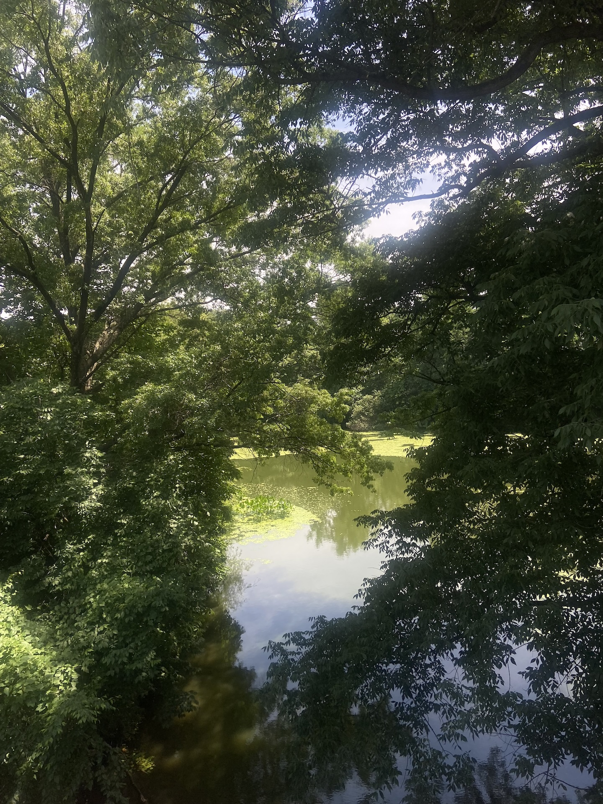
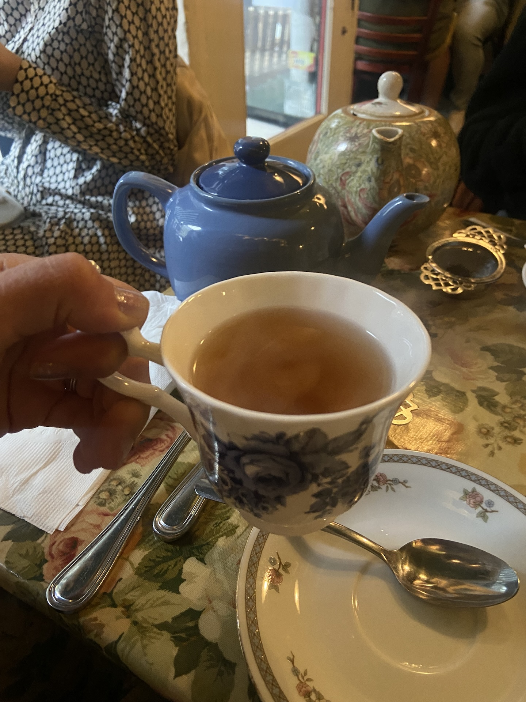
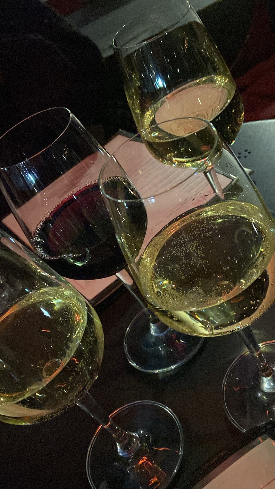

Sports

1904 Surf Ave
Brooklyn, NY 11224
United States
Train Available to Stop: D, F, Q, N-train
The Brooklyn Cyclones is Brooklyn's baseball team, owned under the METs have tickets around 20 dollars.

Parks
Tea
Refer to the Year Round Tab for this season, as much of what you can do in the Spring nigth is dependent on how cold or warm it is at the time. However, here are some things that start in the spring:
Dine-in Movies

40 Bogart St
Brooklyn, NY 11206
United States
Train Available to Stop: L-train
Syndicated is both a stand alone bar, and a dine-in theater. In their small theater with long booth style seats, you can order food and drinks to the table.
Adult-only spots
